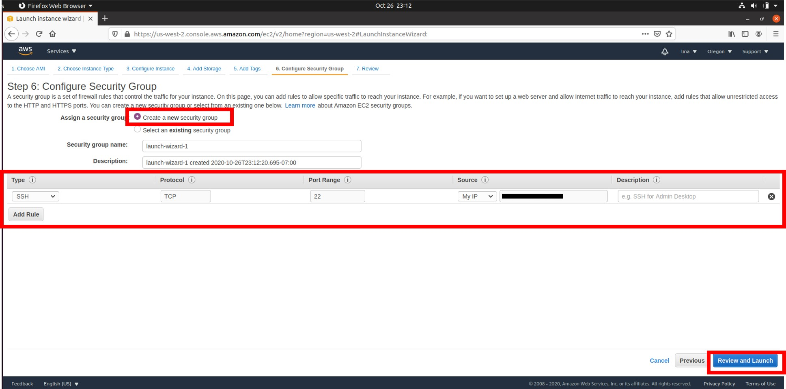

Lina's Blogs
Welcome to my webpage. Here, I will share weekly blogs for my CIT 480 class.
Blog 8: How to Create an AWS EC2 Instance
Introduction
In this blog, I will go over how to create an AWS EC2 instance and how to SSH into the newly created EC2 instance.In summary, an EC2 instance is a virtual server in Amazon's Elastic Compute Cloud (EC2) for running applications on the Amazon Web Services (AWS) infrastructure
Prerequisite
- Must have an AWS account. (Click here & sign up if you do not have an account)
Getting Started
STEP 1: Once you have created and logged into your account, go ahead and click on "Services".
.png)
STEP 2: Select EC2 from the list and click on it.
.png)
STEP 3: Click on the orange button where it says "Launch Instance"
and the again click on launch instance.
.png)
STEP 4: As you can see on this page you have up to 40 AMI (Amazon
Machine Image) options. For this blog, I will be using the "Ubuntu Seerver
20.04 LTS (HVM), SSD Volume TYpe". As the name states, this is an Ubuntu
machine and also this is going to be a free option. Click "Select" and you will
be taken to the next page.
.png)
STEP 5: In this step, we will have to choose an instance type. The
"t2.micro" is going to be our selection. This option only uses 1 virtual
CPU and its Network performace in low to moderate. This option is great for
first time users who are just getting Started and also it is FREE. Once you have
selected your desired option or "t2.micro", go ahead and click on "Next:Configure Instacne Details".
.png)
STEP 6: For this step, we will use the default settings and click on
"Next:Add Storage".
.png)
STEP 7: Next we are going to be using the default memory size which is
8 GB and then click on "Next: Add Tags".
.png)
STEP 8: No tags will be added in this blog. Leave everything as default and click on
"Next:Configure Security Group"
.png)
STEP 9: In this step, we will create a new security group. For the type select SSH, for the Protocal select TCP, for port range select 22, for source select My IP, and description is optional. 
STEP 10: Here you will see a summary of your instance. After you have checked the
summary go ahead and click on lunch.
.png)
You have now successfully created an AWS EC2 Instacne.